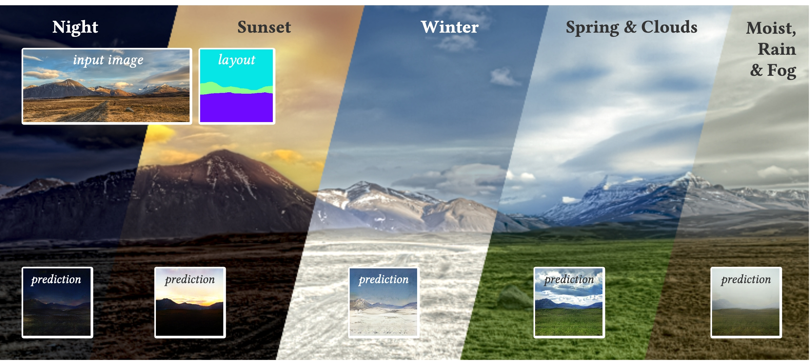
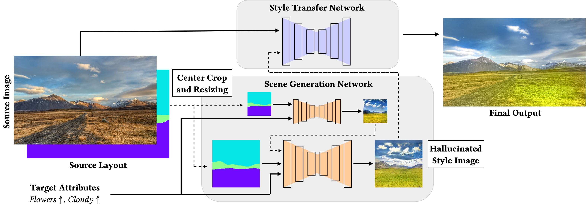
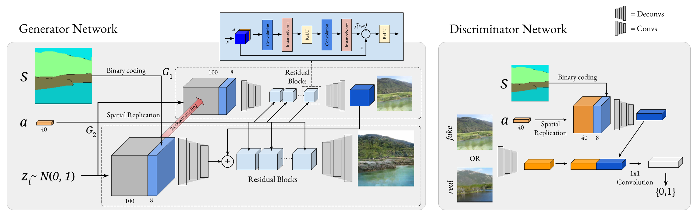
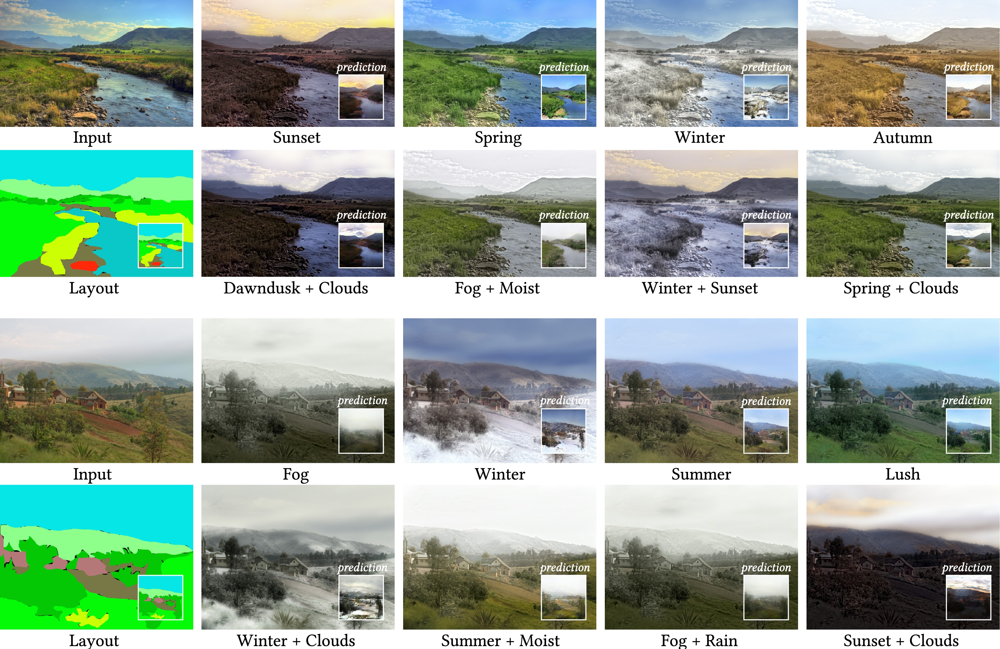
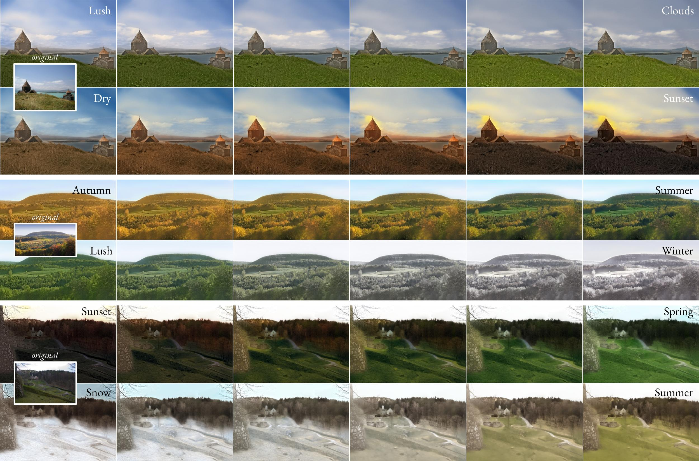
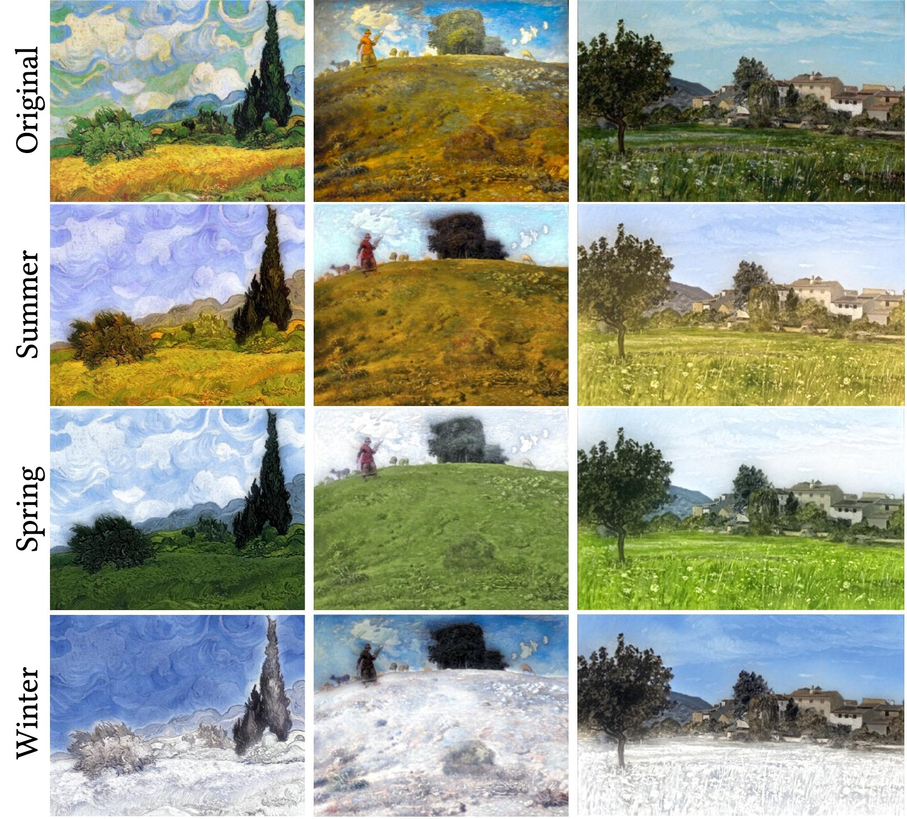
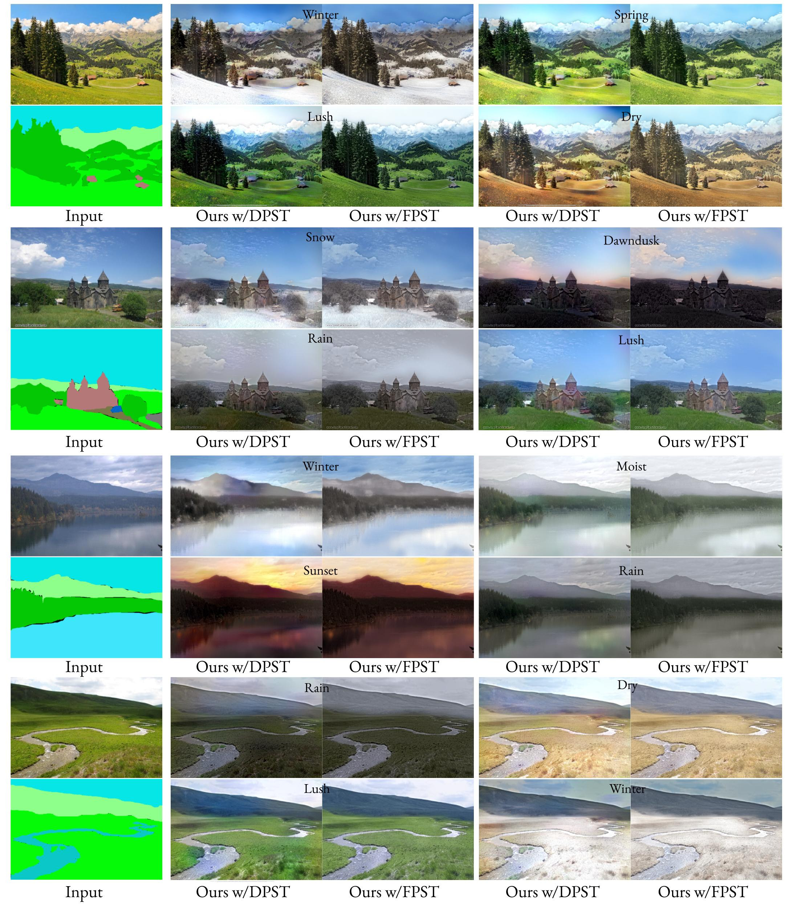
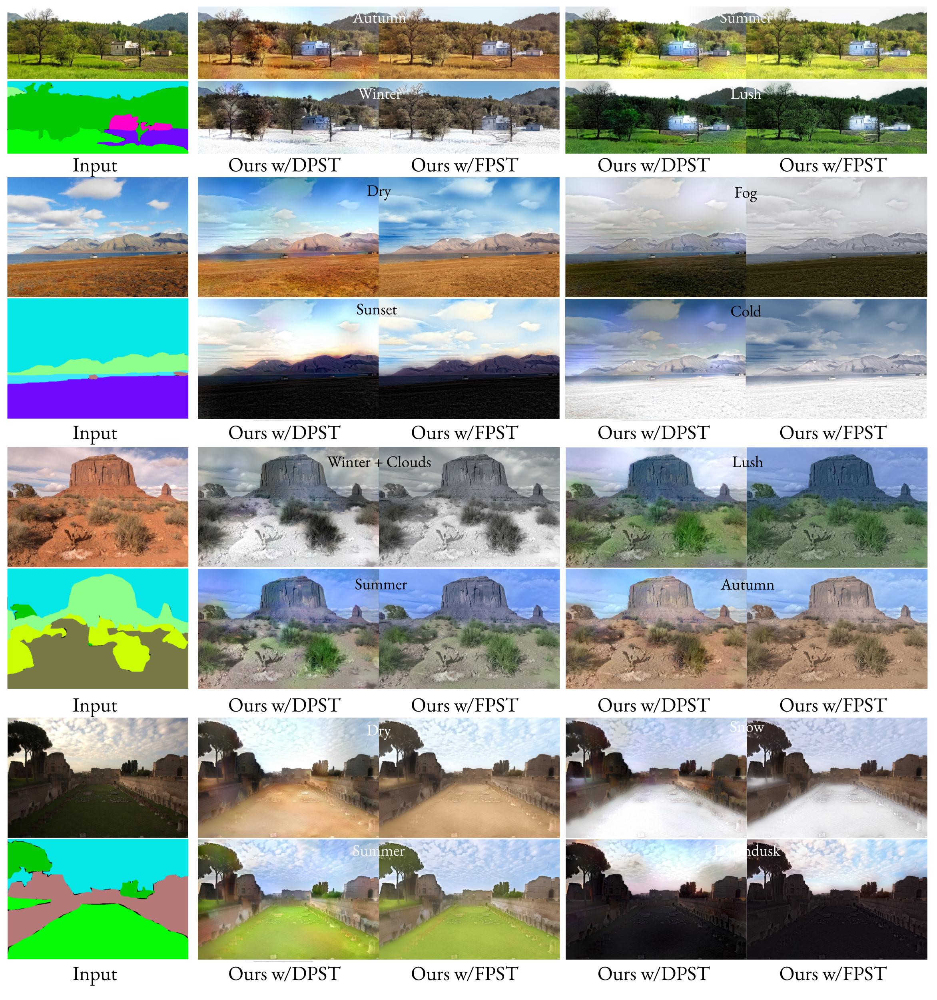

Manipulating Attributes of Natural Scenes via Hallucination
A new image editing tool to manipulate transient attributes of outdoor photos.

Given a natural image, our approach can hallucinate different versions of the same scene in a wide range of conditions, e.g. night, sunset, winter, spring, rain, fog or even a combination of those. First, we utilize a generator network to imagine the scene with respect to its semantic layout and the desired set of attributes. Then, we directly transfer the scene characteristics from the hallucinated output to the input image, without the need for a reference style image.
In this study, we explore building a two-stage framework for enabling users to directly manipulate high-level attributes of a natural scene.
The key to our approach is a deep generative network which can hallucinate images of a scene as if they were taken at a different season (e.g. during winter),
weather condition (e.g. in a cloudy day) or time of the day (e.g. at sunset). Once the scene is hallucinated with the given attributes,
the corresponding look is then transferred to the input image while preserving the semantic details intact, giving a photo-realistic manipulation result.
As the proposed framework hallucinates what the scene will look like, it does not require any reference style image as commonly done in most of the appearance or style transfer approaches.
Moreover, it allows to simultaneously manipulate a given scene according to a large set transient attributes to a large extent within a single model, eliminating the need to train multiple networks per each translation task.
Our comprehensive set of qualitative and quantitative results demonstrate the effectiveness of our approach against the competing methods.
Introduction
"The trees, being partly covered with snow, were outlined indistinctly against the grayish background formed by a cloudy sky, barely whitened by the moon."
—Honore de Balzac (Sarrasine, 1831)
The visual world we live in constantly changes its appearance depending on time and seasons.
For example, at sunset, the sun gets close to the horizon gives the sky a pleasant red tint,
with the advent of warm summer, the green tones on the grass leave its place in bright yellowish tones
and autumn brings a variety of shades of brown and yellow to the trees. Such visual changes in the nature continues
in various forms at almost any moment with the effect of time, weather and season.
Such high-level changes are referred to as transient scene attributes -- e.g. cloudy, foggy, night, sunset, winter, summer, to name a few .
Image generation is quite a challenging task since it needs tohave realistic looking outputs.
Visual attribute manipulation can beconsidered a bit harder as it aims at photorealism as well as results that are semantically consistent with the input image.
Unlike recent image synthesis methods ,
which explore producing realistic-looking images from semantic layouts, automatically manipulating visual attributes
requires modifying the appearance of an input image while preserving object-specific semantic details intact.
Some recent style transfer methods achieve this goal to a certain extent but they require a reference style
image .
We propose a new two-stage visual attribute manipulation framework for changing high-level attributes of a given outdoor image.
Very recently, in CVPR2019, a similar scene generation tool named GauGAN was proposed to synthesize
realistic outdoor scenes from interactively edited doodles. Our image editing tool differs from GauGAN in the following two aspects.
First, our image editing tool not only aims at scene generation from semantic layout like in GauGAN but also it provides manipulating transient attributes of input outdoor scenes.
Second, our scene generation model enables users to play degrees of transient attributes as well as drawing a novel outdoor scene interactively.
System Overview

Overview of the proposed attribute manipulation framework. Given an input image and its semantic layout, we first resize and center-crop the layout to 512 \times 512 pixels and feed it to our scene generation network.
After obtaining the scene synthesized according to the target transient attributes, we transfer the look of the hallucinated style back to the original input image.
Our framework provides an easy and high-level editing system to manipulate transient attributes of outdoor scenes. The key component of our framework is a scene generation network that is conditioned on semantic layout and continuous-valued vector of transient attributes.
This network allows us to generate synthetic scenes consistent with the semantic layout of the input image and having the desired transient attributes. One can play with 40 different transient attributes by increasing or decreasing values of certain dimensions.
Note that, at this stage, the semantic layout of the input image should also be fed to the network, which can be easily automated by a scene parsing model.
Once an artificial scene with desired properties is generated, we then transfer the look of the hallucinated image to the original input image to achieve attribute manipulation in a photorealistic manner.
Scene Generation Model (SGN)

Scene Generation Network (SGN). Our proposed CGAN architecture for generating synthetic outdoor scenes consistent with given layout and transientattributes.
We train a conditional Generative Adversarial Network (cGAN) model named as SGN to hallucinate an outdoor scene
in different transient attributes conditioning semantic layouts s and transient attributes a.
We follow a multi-scale strategy similar to that in Pix2pixHD . Our scene generator network (SGN),
however, takes the transient scene attributes and a noise vector as extra inputs in addition to the semantic layout.
While the noise vector provides stochasticity and controls diversity in the generated images, transient attributes let the users have control on the generation process.
Our full objective that combines multi-scale GAN loss and layout-invariant feature matching loss thus becomes:

Sample attribute manipulation results. Given an outdoor scene and its semantic layout,
our model produces realistic looking results for modifying various different transient attributes.
Moreover, it can perform multimodal editing as well, in which we modify a combination of attributes.
Comparison
Comparison with Laffont et al.. In each row, for a given input image (first column),
we respectively provide the results of [Laffont et al.2014]using their exemplar-based style transfer method (second column)
and FPST [Li et al.] (third column) between retrieved images and input images, andthe results of our method (last column)
using FPST [Li et al. 2018] between generated image by proposed SGN model and input image.
Attribute Transition

Our method can produce photorealistic manipulation results for different degrees of transient attributes.
Videos
Additional Results

Season transfer to paintings. Source images: Wheat Field with Cypresse by Vincent van Gogh (1889),
In the Auvergne by Jean-Francois Millet (1869) and Lourmarin by Paul-Camille Guigou (1868), respectively.


Acknowledgements
This work was supported in part by TUBA GEBIP fellowship awarded to E. Erdem. We would like to thank NVIDIA Corporation for the donation of GPUs used in this research. This work has been partially funded by the DFG-EXC-Nummer 2064/1-Projektnummer 390727645.